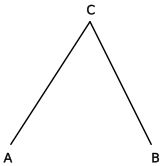

Беседа 713 от 3877 · Беинса Дуно
За свободата
Само светлият път на Мъдростта води към Истината!
Тя постоянно ни весели!
Какво нещо е свободата? Много хубави неща са писани за свободата, но въпреки това хората са умирали без свобода.
Законът на свободата се определя от два велики принципа. Човек не може да добие свобода, ако не е възлюбил Истината, ако не я е придобил. Истината трябва да бъде главната цел в живота на човека, към нея той трябва да се стреми. Намерите ли този принцип в себе си, вие ще бъдете свободни.
Ако ти, като търсиш Истината, представляваш сам за себе си цел в живота си, защо ти са хората? Факт е обаче, че човек не живее само за себе си. Всеки човек е разхвърлян между обкръжаващите го хора. И какви ли преплитания не стават? Милиони жички се образуват от тия преплитания. Тия жички са много еластични, не се късат, но само се преплитат.
Реализирането на смисъла на живота е Истината. Трябва да бъдете свободни от всички заблуждения. Ако мислите, че всичко можете да направите, вие пак се заблуждавате. И ако мислите, че нищо не можете да направите, вие пак се заблуждавате. Вие казвате: Няма човек, който може да ме разбере. Значи този човек или не се е родил още, или не сте го срещнали. Трябва да намерите вашата сродна душа или горе на небето, или долу на земята. Това съставя смисъла на сегашното ви идване. Вие сте A, сродната ви душа е B. Ще дойдете заедно до точката C, най-високата точка на вашия живот, и вие ще бъдете свободни. Вие ще желаете нещата, докато ги нямате. Завладате ли ги, имате вече други желания. Следователно нещата, които търсите, трябва да бъдат вечни – извън времето и пространството.

Туй, което спъва сегашната младеж е, че те са изгубили посоката на своя живот, станали са много преплитания. Всеки от вас моментно, т.е. временно поне, трябва да остане сам, за да реши известна задача. И мъчнотиите, това са тъкмо тия моменти, когато ние оставаме сами, за да разрешим важни въпроси, изостанали от памти века. Та когато и вие останете сами, това е най-важният момент за разрешаване на известна задача. След това ще дойдат всичките ви приятели. Срамно е ученикът да се обезсърчава!
Вие трябва да предпочитате смъртта пред робството. Трябва да представлявате пример за юначество. Ама че щели да ви затворят, че щели да ви бият – издържайте, не се плашете! Тихо и спокойно застанете – това е свобода. Без страх! – това правило трябва да приложите. Страхът ражда лъжата, а лъжата – лицемерието. Като ученици всички трябва да бъдете без лъжа, а да живеете без лъжа, това значи да живеете без страх. Никога не унижавайте другите пред себе си, защото ще унижите сами себе си.
От всичко това, което съм ви говорил, приложете поне една стотна част! Тогава ще пристъпя по-нататък, ще навлезем в друга област, дето работят живите сили на природата.
Вашето съзнание трябва да бъде толкова будно, че да не причинявате никакви страдания на окръжаващите ви. Това е благородство! Ако аз съм приятел някому в едно отношение, трябва да съм му приятел във всички отношения. Ако съм неприятел в едно отношение, неприятел съм във всички отношения. Щом обичам Бога, трябва да обичам всички, които Бог обича. Ученикът трябва абсолютно да изпълнява Божия закон! Това запишете само с кръвта на вашето съзнание. Това е една светла страница във вашите лекции дотук.
От днес обръщам нов лист.
Тайна молитва.
Само светлият път на Мъдростта води към Истината!
Тя постоянно ни весели!
21. лекция на Младежкия окултен клас,
държана от Учителя на 9.III. 1924 г, в гр. София